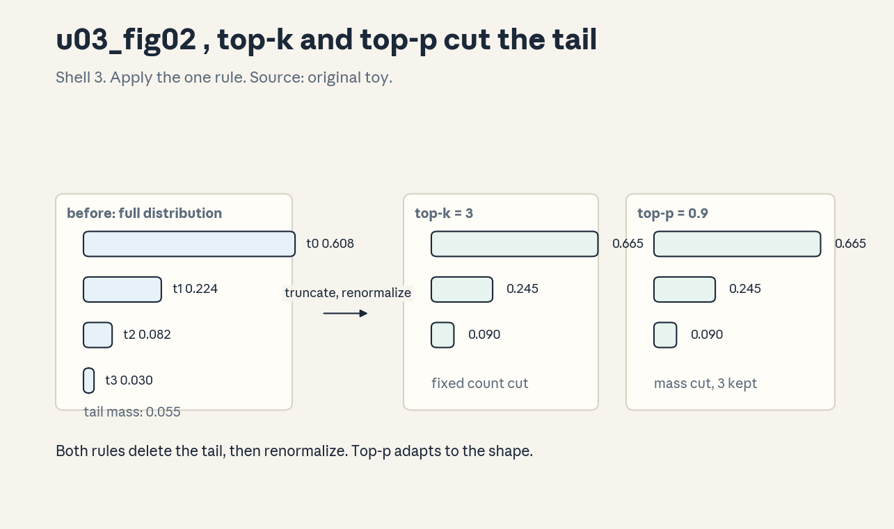
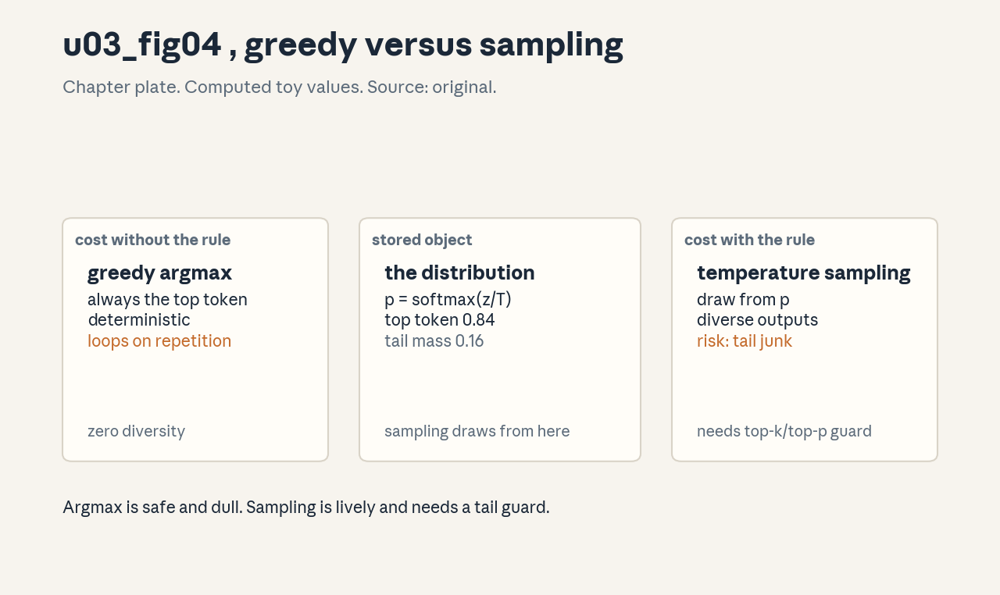

U03 · LLM architecture and generation
U03 , LLM architecture and generation
Prerequisites: P13, P14, P15. Bridge links in ../prerequisites.md.
Lecture anchor: L2 (Oct 2, 2026). Claim class: OFFICIAL-SYLLABUS for
LLM definition, MoE, context length, temperature, sampling strategies.
REQUESTED-BRANCH for prompting, ICL, demonstration selection, reasoning
prompting, self-consistency, evaluation limits. All leaves: PLANNED /
SOURCE ATTRIBUTION PENDING until slide or transcript extraction
verifies them.
Notation: see ../notation_and_shapes.md. Glossary: ../glossary.md.
Not yet understood
Concepts this unit uses but does not teach. Each one arrives in a later unit.
- Training and adaptation (U04): SFT, LoRA, optimizer memory.
- Preference tuning (U05): DPO, RLHF, reward models.
- Reasoning RL (U06): GRPO, verifiers, test-time scaling.
- RAG and agents (U07): retrieval pipelines and ReAct loops.
- LLM evaluation (U08): judging, bias, calibration, intervals.
Local remediation , distributions, entropy, conditioning
Do this block first if diagnostic items D2, D4, or D7 were not full marks.
R0.1 Reading a distribution. p = [0.7, 0.2, 0.1]. The top token wins with 70%. The tail holds 30%. Sampling draws from this p, argmax always picks the top. Temperature reshapes p before either acts.
R0.2 Entropy. H = -sum p log p. For [0.7, 0.2, 0.1] (natural log): 0.250 + 0.322 + 0.230 = 0.802 nats. Sharp distributions have low entropy, flat ones have high entropy. Temperature moves entropy up and down.
R0.3 Conditioning. P(y | x) is a new distribution for each x. A prompt is a conditioner: it selects which distribution the model samples from. “Prompting works” means the conditioner selects well.
C01: LLM definition
Leaf id cme295-U03-C01. Claim class OFFICIAL-SYLLABUS.
Status PLANNED / SOURCE ATTRIBUTION PENDING.
-
Source mapping, scope, objectives, dependencies. Maps to L2 “LLM definition and architecture”. Scope: what the term covers operationally. Objectives: define an LLM without hype, state its three fixed artifacts, and separate definition from capability claims. Depends on P13, P14.
-
Motivating question and toy. Question: what exactly is the object when someone says “the model”? Toy: weights W (numbers), tokenizer T (string <-> id map), config C (d, L, h, T_max). The LLM is the triple (W, T, C) plus the sampling code. Nothing more.
-
Mental model. An LLM is a decoder-only transformer trained to predict the next token, large enough that the triple (W, T, C) does the work. “Large” is about the triple’s size, not about understanding. Capabilities are measured, not defined.
-
Objects, symbols, units, shapes, assumptions. W: ~1e9-1e12 floats. T: vocabulary V ~ 32k-200k. C: d, L, h, T_max, RoPE base. Assumption: the tokenizer at inference is the training tokenizer (C02 in U01: mismatch breaks everything).
-
Derivation / mechanism. No derivation: a definition. The operational content: text -> ids (T) -> forward pass (W, C) -> logits -> sample -> ids -> text (T). Every LLM application is this loop with different conditioners (prompts) and samplers.
-
Computed example. Toy triple: V = 32000, d = 4096, L = 32. Weights fp16: roughly 12 * d^2 * L = 12 * 4096^2 * 32 ~= 6.4e9 params -> ~13 GB. The tokenizer table is kilobytes. The loop above is the entire runtime.
-
Algorithm and reference implementation.
generate(prompt): ids = tokenize(prompt), for step in range(n): logits = forward(ids), next = sample(logits), ids.append(next), return detokenize(ids). Eight lines. This is the whole interface. -
Correctness checks and expected output. Check: tokenize then detokenize roundtrips, T = 0 sampling is deterministic, the same triple gives the same outputs. If outputs differ at T = 0, the triple changed.
-
Complexity, memory, statistical efficiency, stability, costs. Per step: O(T d^2 + T^2 d) with cache O(T d). Memory: weights + cache (U02 C10). The definition says nothing about cost, the triple’s size does.
-
Nearest alternatives and selection boundaries. Encoder-only (BERT) and encoder-decoder (T5) are not LLMs in this usage, they lack open generation. Choose the decoder-only definition when the task needs open text, the label is about the loop.
-
Failure case, broken assumption, counterexample. Broken assumption: the name guarantees behavior. Counterexample: two triples with the same architecture and size but different data behave differently, “LLM” names the shape, not the skills.
-
Research reading and falsifiable extension. Read the model cards of public LLMs for how (W, T, C) is documented. Extension: swap the tokenizer of a tiny model, keep W, measure the perplexity explosion and report it.
-
Breadth recall, deep oral ladder, unfamiliar transfer. Recall: name the three artifacts. Ladder: define the triple -> trace the loop -> justify the tokenizer match -> implement generate -> predict the swap failure. Transfer: define the “model” for a diffusion image generator, name its triple.
-
Lab/exercises with answers separated. E1: bytes of the toy triple’s weights in fp16. E2: what breaks first if T changes? E3: why does sampling code belong in the definition? Key:
../keys/u03_answers.mdR1-R3. -
Visual units, provenance, accessibility, audit rows. Atomic units: W, T, C, loop. Architecture plate: named boxes (tokenizer, forward, sampler) and named edges (ids, logits). Logged as a plate spec.
C02: MoE
Leaf id cme295-U03-C02. Claim class OFFICIAL-SYLLABUS.
Status PLANNED / SOURCE ATTRIBUTION PENDING.
-
Source mapping, scope, objectives, dependencies. Maps to L2 “Mixture of experts”. Scope: sparse expert layers. Objectives: write the routing equation, compute a toy routing, and explain the load-balancing loss. Depends on P14, U02 C08 (FFN).
-
Motivating question and toy. Question: capacity costs compute, can most weights sleep per token? Toy: 8 experts, top-2 routing. Each token wakes 2 of 8 FFNs, the other 6 cost nothing.
-
Mental model. The router is a bouncer with a guest list of 2. Each expert is a full FFN. The output is the weighted sum of the chosen experts. Capacity (total parameters) grows, active compute stays flat.
-
Objects, symbols, units, shapes, assumptions. Router: g = softmax(x W_g), W_g: (d, E). Top-k: keep k gates, renormalize. Output: sum_i w_i Expert_i(x). Assumption: the router balances load (enforced by an auxiliary loss), experts specialize.
-
Derivation / mechanism. Without balancing, the router collapses: one expert gets everything (rich get richer, since chosen experts train faster). The aux loss penalizes the product of the fraction of tokens routed to expert i and the mean gate value: L_aux = E * sum_i f_i * P_i. It is added with a small coefficient.
-
Computed example. From
visuals/render_u03.py(seed 11, E = 8, d = 16, k = 2): gates [0.030, 0.112, 0.087, 0.202, 0.431, 0.086, 0.028, 0.024], chosen E4, E3 with weights [0.681, 0.319]. MoE output norm 2.746 vs dense (all experts) 1.838. Figure: . Public example: Mixtral 8x7B
(8 experts, top-2, public model fact).
. Public example: Mixtral 8x7B
(8 experts, top-2, public model fact). -
Algorithm and reference implementation.
moe(x): g = softmax(x @ W_g), top = argmax2(g), w = renormalize, return sum w_i * expert_i(x). Add aux loss from routing fractions. Twelve lines. -
Correctness checks and expected output. Check: exactly k experts are active per token, weights sum to 1, expert usage is within 2x of uniform. If one expert takes > 50%, the aux coefficient is too small.
-
Complexity, memory, statistical efficiency, stability, costs. Active compute ~= k/E of dense, memory holds all experts. Communication: tokens route across devices (expert parallelism). The router is a single point of failure for load balance.
-
Nearest alternatives and selection boundaries. Dense FFN (simple, no routing risk). Switch (top-1, cheaper, weaker). Choose MoE when capacity must grow faster than the compute budget.
-
Failure case, broken assumption, counterexample. Broken assumption: experts specialize. Counterexample: without the aux loss, or with a bad coefficient, experts stay redundant and the model is a slow dense net. Specialization is enforced, not emergent.
-
Research reading and falsifiable extension. Read Shazeer et al. (2017, MoE) and Fedus et al. (2022, Switch). Extension: train a tiny MoE with and without the aux loss, measure expert usage entropy and task accuracy.
-
Breadth recall, deep oral ladder, unfamiliar transfer. Recall: write the routing equation. Ladder: define the router -> compute the toy -> justify the aux loss -> implement moe -> predict the collapse. Transfer: MoE for a recommender with user segments, defend E and k.
-
Lab/exercises with answers separated. E1: active fraction for E = 64, k = 2. E2: aux loss when one expert gets all tokens. E3: why renormalize the top-k gates? Key:
../keys/u03_answers.mdR4-R6. -
Visual units, provenance, accessibility, audit rows. Figure
u03_fig03.png: Shell 3, one rule (route to 2 of 8), before token + router, after weighted expert sum. Source: original toy. Numbers fromrender_u03.py.
C03: context length
Leaf id cme295-U03-C03. Claim class OFFICIAL-SYLLABUS.
Status PLANNED / SOURCE ATTRIBUTION PENDING.
-
Source mapping, scope, objectives, dependencies. Maps to L2 “Context length”. Scope: what T_max means and how to stretch it. Objectives: state the three costs of longer context and explain position interpolation. Depends on U02 C06, C11.
-
Motivating question and toy. Question: the model trained at 4k tokens, the task needs 128k. What breaks, and what are the fixes? Toy: RoPE angles at position 100000 with base 10000 were never seen in training.
-
Mental model. Context length is a triple constraint: memory (T^2 scores, T cache), compute (T^2 d), and position codes (unseen angles). Stretching context means paying all three or cheating one.
-
Objects, symbols, units, shapes, assumptions. T_max: trained length. Position interpolation: map position m to m / s for stretch factor s (Chen et al., 2023). Assumption: the model can reuse learned angle patterns at compressed positions.
-
Derivation / mechanism. Interpolation divides all RoPE angles by s, keeping every angle inside the trained range. The cost: local resolution drops (s positions share the patterns of one). NTK-aware variants scale the base instead of the positions, preserving high-frequency detail.
-
Computed example. s = 32 stretches 4k to 128k. Attention memory at T = 128k, d = 4096, h = 32, fp16: scores per layer = 32 * 128k^2 * 2 bytes = 1 TB. The position fix is the easy part, the memory is the wall. That number is why long context needs kernels, not just interpolation.
-
Algorithm and reference implementation.
stretch(model, s): scale position indices by 1/s (or scale the RoPE base by the NTK rule), run a short fine-tune on long documents, evaluate passkey retrieval. The fine-tune teaches the model the new scale. -
Correctness checks and expected output. Check: perplexity at 4k is unchanged, passkey retrieval works at 128k, the score memory matches the formula. If 4k perplexity moved, the interpolation broke trained positions.
-
Complexity, memory, statistical efficiency, stability, costs. Memory O(T^2) scores, O(T) cache per layer. Fine-tuning on long data is required, zero-shot stretch underperforms.
-
Nearest alternatives and selection boundaries. Larger RoPE base (no fine-tune, weaker). Truncation/summarization (no model change, loses information). RAG (U07) for knowledge, not for reasoning over the full text. Choose interpolation when the task needs the whole context in one pass.
-
Failure case, broken assumption, counterexample. Broken assumption: stretched context reasons as well as trained context. Counterexample: “lost in the middle” (Liu et al., 2023): models use the start and end of long contexts better than the middle. Length is not comprehension.
-
Research reading and falsifiable extension. Read Chen et al. (2023, position interpolation) and Liu et al. (2023, lost in the middle). Extension: measure passkey accuracy vs position on a tiny stretched model, plot the U-shape.
-
Breadth recall, deep oral ladder, unfamiliar transfer. Recall: name the three costs. Ladder: define T_max -> compute the 1 TB -> justify interpolation -> implement stretch -> predict lost-in-the-middle. Transfer: 1M-token genomics, state the first wall.
-
Lab/exercises with answers separated. E1: score memory at T = 32768, h = 8, fp16. E2: s for 2k -> 64k. E3: why does interpolation need fine-tuning? Key:
../keys/u03_answers.mdR7-R9. -
Visual units, provenance, accessibility, audit rows. Atomic units: trained range, stretched range, memory wall. Lesson plate: before (angles to 4k) -> rule (divide by s) -> after (angles cover 128k). Logged as a plate spec with the 1 TB computation.
C04: temperature
Leaf id cme295-U03-C04. Claim class OFFICIAL-SYLLABUS.
Status PLANNED / SOURCE ATTRIBUTION PENDING.
-
Source mapping, scope, objectives, dependencies. Maps to L2 “temperature”. Scope: the softmax temperature. Objectives: compute distributions at three temperatures, state both limits, and read entropy off the result. Depends on R0.1, R0.2.
-
Motivating question and toy. Question: the logits are fixed, how do you make the model more daring or more careful without retraining? Toy: logits [3, 1, 0, -1] for [the, a, an, zebra]. Divide by T, then softmax.
-
Mental model. Temperature is a volume knob on decisiveness. T < 1 turns it down (the winner takes more), T > 1 turns it up (everyone gets a share). T = 1 changes nothing.
-
Objects, symbols, units, shapes, assumptions. p_i = exp(z_i / T) / sum exp(z_j / T). T > 0, unitless. Assumption: the logits are fixed, only the readout changes.
-
Derivation / mechanism. As T -> 0, the largest logit dominates: p -> one-hot on argmax (greedy). As T -> infinity, z_i / T -> 0 for all i: p -> uniform. Entropy rises monotonically with T. The limits are exact, not approximate.
-
Computed example. From
visuals/render_u03.py: T = 0.5 -> [0.979, 0.018, 0.002, 0.000], entropy 0.110, T = 1.0 -> [0.831, 0.112, 0.041, 0.015], entropy 0.595, T = 2.0 -> [0.579, 0.213, 0.129, 0.078], entropy 1.110. Figure: .
. -
Algorithm and reference implementation.
sample_temp(logits, T): return categorical(softmax(logits / T)). Three lines. T = 0 is the special case argmax. -
Correctness checks and expected output. Check: T = 1 reproduces the plain softmax, probabilities sum to 1 at every T, entropy rises with T. If T = 0 samples vary, the argmax has a tie or the code path is wrong.
-
Complexity, memory, statistical efficiency, stability, costs. O(V) per step, negligible. Numerically: divide first, then the stable softmax (R0.2 in U02). No training cost.
-
Nearest alternatives and selection boundaries. Top-k/top-p (C05) cut the tail, temperature reshapes it. Use temperature for the creativity dial, truncation for the safety rail. They compose.
-
Failure case, broken assumption, counterexample. Broken assumption: higher T means more creative AND still coherent. Counterexample: at T = 2 the tail (zebra at 0.078) fires often enough to derail factual text, temperature without truncation is a common source of “confident nonsense”.
-
Research reading and falsifiable extension. Read the decoding sections of the GPT-2/GPT-3 papers for production temperature practice. Extension: sweep T on a factual QA set and a story set, report where accuracy peaks vs where human preference peaks.
-
Breadth recall, deep oral ladder, unfamiliar transfer. Recall: state both limits. Ladder: define the knob -> compute the three distributions -> justify the limits -> implement sample_temp -> predict the high-T failure. Transfer: temperature for a game AI’s move selection, defend the setting.
-
Lab/exercises with answers separated. E1: distribution at T = 0.25 for logits [2, 0]. E2: entropy at T -> infinity for V = 4. E3: why does T = 0 need a special case in code? Key:
../keys/u03_answers.mdR10-R12. -
Visual units, provenance, accessibility, audit rows. Figure
u03_fig01.png: Shell 3, one rule (softmax(z/T)), before logits, after three distributions. Source: original toy. Numbers fromrender_u03.py. Alt text: “Plate showing one logit vector reshaped by three temperatures.”
C05: top-k/top-p
Leaf id cme295-U03-C05. Claim class OFFICIAL-SYLLABUS (“Sampling
strategies”).
Status PLANNED / SOURCE ATTRIBUTION PENDING.
-
Source mapping, scope, objectives, dependencies. Maps to L2 “Sampling strategies”. Scope: tail truncation. Objectives: apply top-k and top-p by hand, renormalize, and contrast fixed-count vs mass-based cuts. Depends on C04.
-
Motivating question and toy. Question: temperature flattens the tail but never removes it, how do you forbid the junk outright? Toy: 8-token distribution, top-k = 3 keeps 3 tokens, top-p = 0.9 keeps the smallest set with mass >= 0.9.
-
Mental model. Truncation is a bouncer with a list. Top-k: the list has k names, always. Top-p: the list holds enough names to cover mass p, however many that takes. Both renormalize after the cut.
-
Objects, symbols, units, shapes, assumptions. k: positive integer. p in (0, 1]. Renormalize: divide kept probabilities by their sum. Assumption: the tail holds the junk, the head holds the sense.
-
Derivation / mechanism. Sort descending. Top-k: keep the first k. Top-p (nucleus): accumulate until the sum >= p, keep those. Renormalization makes the kept set a distribution again. Top-p adapts: sharp distributions keep few tokens, flat ones keep many.
-
Computed example. From
visuals/render_u03.py: base top-3 [0.6082, 0.2238, 0.0823], top-k = 3 -> [0.6652, 0.2447, 0.0900], top-p = 0.9 keeps 3 -> identical [0.6652, 0.2447, 0.0900] here. (They differ when the mass concentrates differently, the toy coincides.) Figure:
. -
Algorithm and reference implementation.
top_k(logits, k)/top_p(logits, p): sort, mask, renormalize, sample. Ten lines. Apply after temperature, before sampling. -
Correctness checks and expected output. Check: kept set sums to 1 after renormalization, top-k keeps exactly k, top-p keeps mass >= p with the minimal set. If the tail still samples, the mask was applied to the wrong order.
-
Complexity, memory, statistical efficiency, stability, costs. O(V log V) for the sort per step, fine at V ~ 1e5. The cut changes the distribution the model was trained on: mild truncation is safe, aggressive truncation distorts.
-
Nearest alternatives and selection boundaries. Temperature alone (keeps the tail). Typical sampling / epsilon sampling (finer cuts). Choose top-p as the default adaptive guard, add top-k when a hard cap is needed.
-
Failure case, broken assumption, counterexample. Broken assumption: truncation only removes junk. Counterexample: at top-p = 0.5 on a flat distribution, valid continuations are cut and the model repeats itself, the “safety rail” becomes a cage.
-
Research reading and falsifiable extension. Read Holtzman et al. (2020, nucleus sampling). Extension: sweep top-p on a repetition metric and a quality metric, find the knee.
-
Breadth recall, deep oral ladder, unfamiliar transfer. Recall: write both rules. Ladder: define the cut -> compute the toy -> justify renormalization -> implement top_p -> predict the cage failure. Transfer: truncation for a code generator, defend p.
-
Lab/exercises with answers separated. E1: top-k = 2 on [0.5, 0.3, 0.15, 0.05]. E2: top-p = 0.8 on the same. E3: when do top-k and top-p coincide? Key:
../keys/u03_answers.mdR13-R15. -
Visual units, provenance, accessibility, audit rows. Figure
u03_fig02.png: Shell 3, one rule (truncate, renormalize), before full distribution, after top-k and top-p panels. Source: original toy. Numbers fromrender_u03.py.
C06: sampling versus argmax
Leaf id cme295-U03-C06. Claim class OFFICIAL-SYLLABUS (“Sampling
strategies”).
Status PLANNED / SOURCE ATTRIBUTION PENDING.
-
Source mapping, scope, objectives, dependencies. Maps to L2 “Sampling strategies”. Scope: greedy vs stochastic decoding. Objectives: state when each wins, name greedy’s failure modes, and explain why sampling needs guards. Depends on C04, C05.
-
Motivating question and toy. Question: if the top token is most likely, why ever sample anything else? Toy: distribution [0.831, 0.112, 0.041, 0.015] (T = 1 from C04). Greedy always picks token 0, sampling picks token 0 with 83% and explores otherwise.
-
Mental model. Argmax is the safe road: deterministic, highest-probability, dull. Sampling is the side roads: diverse, risky, sometimes brilliant. Open generation needs side roads, closed tasks (math, code tests) usually want the safe road.
-
Objects, symbols, units, shapes, assumptions. Greedy: x_t = argmax p. Sampling: x_t ~ p (after T, top-k/p). Assumption: the task’s scoring matches the decoding (diversity wanted -> sample, exactness wanted -> greedy).
-
Derivation / mechanism. No derivation: a decision rule. Greedy failure: repetition loops (the model walks into a high-probability cycle: “the the the”). Sampling failure: tail junk (C04). Beam search (not covered deeply here) keeps k hypotheses as a middle ground.
-
Computed example. From
render_u03.py: greedy pick prob 1.000, sample entropy 0.595 nats at T = 1. The entropy is the diversity budget: 0.595 nats means real choice exists. Figure:
(chapter plate). -
Algorithm and reference implementation.
decode(logits, mode): greedy -> argmax, sample -> categorical after guards. Five lines. The mode is a config, not a model change. -
Correctness checks and expected output. Check: greedy is deterministic across runs, sampling varies, repetition penalty (optional) breaks loops. If greedy loops, the task needs sampling or a penalty.
-
Complexity, memory, statistical efficiency, stability, costs. Same cost per step. The cost is in quality risk, not FLOPs.
-
Nearest alternatives and selection boundaries. Beam search for translation-style tasks (keeps options, still quasi-deterministic). Choose greedy for factual short answers, sampling with guards for creative long text.
-
Failure case, broken assumption, counterexample. Broken assumption: greedy gives the most likely SEQUENCE. Counterexample: greedy is locally optimal per token, the globally most likely sequence needs search. Token-greedy != sequence-optimal.
-
Research reading and falsifiable extension. Read the decoding analyses in the GPT papers and Holtzman et al. (2020) on degeneration. Extension: measure repetition rate vs T on a story prompt, find where loops vanish.
-
Breadth recall, deep oral ladder, unfamiliar transfer. Recall: name one failure mode each. Ladder: define the modes -> read the entropy -> justify the match to task -> implement decode -> critique token-greedy. Transfer: decoding for a chess engine’s move picker, defend the mode.
-
Lab/exercises with answers separated. E1: when does greedy loop? Describe the mechanism. E2: entropy 0 vs 2 nats: what does each imply for sampling? E3: why is beam search not sampling? Key:
../keys/u03_answers.mdR16-R18. -
Visual units, provenance, accessibility, audit rows. Chapter plate
u03_fig04.png: left cost without the rule (greedy), center the stored object (the distribution), right cost with the rule (sampling), footer the tradeoff. Source: original.
C07: prompting
Leaf id cme295-U03-C07. Claim class REQUESTED-BRANCH.
Status PLANNED / SOURCE ATTRIBUTION PENDING.
-
Source mapping, scope, objectives, dependencies. Requested branch: the syllabus implies prompting via LLM usage but names no prompting topic. Scope: prompts as conditioners. Objectives: write a role-structured prompt, state what each part does, and explain why prompts change behavior without weight changes. Depends on R0.3, C01.
-
Motivating question and toy. Question: the weights are frozen, how does text before the question change the answer? Toy: “Translate to French: hello” vs “hello”. The first conditions P(y | x) on a task frame, the second leaves the distribution unsteered.
-
Mental model. A prompt is a steering wheel, not an engine. System: who the model is. User: the task. The model completes the pattern the prompt sets. Change the pattern, change the distribution.
-
Objects, symbols, units, shapes, assumptions. Roles: system, user, assistant (chat template, U04 C06). The prompt is token ids prepended to the generation. Assumption: the model saw similar framings in training (instruction tuning, U04 C05, is what makes this reliable).
-
Derivation / mechanism. No derivation: conditioning. P(y | prompt, x) differs from P(y | x) because the prompt tokens shift the hidden states that the output reads. Instruction tuning trains the model to obey common frames, the prompt selects among learned behaviors.
-
Computed example. Toy: P(“Bonjour” | “hello”) = 0.02 vs P(“Bonjour” | “Translate to French: hello”) = 0.91 (illustrative, not measured). The frame moves 89 points of probability mass. That is the entire mechanism in one number.
-
Algorithm and reference implementation.
build_prompt(system, user): concatenate role markers and texts per the chat template, tokenize, check length < T_max. Six lines. The template is part of the model artifact (U04 C06). -
Correctness checks and expected output. Check: the template matches training, the prompt fits in context, role markers are exact strings. If the model ignores the system role, the template mismatches the training format.
-
Complexity, memory, statistical efficiency, stability, costs. Prompt tokens cost prefill compute and cache (U02 C10). Long system prompts are a standing tax on every request.
-
Nearest alternatives and selection boundaries. Fine-tuning (U04) for permanent behavior, prompting for per-request steering. Choose prompting when the behavior varies by request, fine-tune when it is constant.
-
Failure case, broken assumption, counterexample. Broken assumption: the model follows instructions. Counterexample: prompt injection (U07 scope): untrusted text in the prompt steers the model against the system instruction. The steering wheel works for attackers too.
-
Research reading and falsifiable extension. Read the instruction-tuning papers (Ouyang et al., 2022) for why frames work. Extension: ablate the system prompt on a task set, measure the accuracy delta the frame buys.
-
Breadth recall, deep oral ladder, unfamiliar transfer. Recall: what does each role do? Ladder: define conditioning -> compute the toy shift -> justify the template -> implement build_prompt -> predict the injection failure. Transfer: a prompt frame for a medical triage bot, defend each line.
-
Lab/exercises with answers separated. E1: write a three-role prompt for summarization. E2: where does the frame fail if the template is wrong? E3: cost of a 2000-token system prompt per request (qualitative). Key:
../keys/u03_answers.mdR19-R21. -
Visual units, provenance, accessibility, audit rows. Atomic units: role, frame, distribution shift. Lesson plate: before (bare input, flat distribution) -> rule (add frame) -> after (steered distribution). Logged as a plate spec.
C08: ICL
Leaf id cme295-U03-C08. Claim class REQUESTED-BRANCH.
Status PLANNED / SOURCE ATTRIBUTION PENDING.
-
Source mapping, scope, objectives, dependencies. Requested branch. Scope: in-context learning. Objectives: define ICL, write a few-shot prompt, and state what ICL is not. Depends on C07.
-
Motivating question and toy. Question: can the model learn a task from examples in the prompt, with zero weight updates? Toy: “eng: hello -> fra: bonjour, eng: cat -> fra: chat, eng: dog ->”. The model continues the pattern with “chien”.
-
Mental model. ICL is pattern completion at the task level. The examples define input-output mapping in context, the model infers the function and applies it. No gradients flow, the “learning” is all in the forward pass.
-
Objects, symbols, units, shapes, assumptions. k examples (shots), each (input, output). Zero-shot: instruction only. Assumption: the pattern is regular enough for the model to infer, the examples fit in context.
-
Derivation / mechanism. No closed derivation, the leading account is implicit Bayesian inference (Xie et al., 2022): the prompt evidences a latent task, and the forward pass approximates the posterior predictive. Treat it as a useful lens, not a theorem.
-
Computed example. Toy: 3-shot translation above. With 0 shots the model guesses the task (maybe continues in English), with 3 shots the format locks. The shot count is the lever, returns diminish past ~8 on simple tasks (task-dependent, reported pattern).
-
Algorithm and reference implementation.
few_shot(examples, query): format each as “in -> out” lines, append the query with an open output, generate. Five lines. Example order and format are hyperparameters. -
Correctness checks and expected output. Check: outputs follow the example format, more shots do not hurt format adherence, the label space matches the examples. If the model ignores the examples, the format is ambiguous.
-
Complexity, memory, statistical efficiency, stability, costs. Each shot costs tokens (prefill + cache). ICL is sample-efficient (no training) but token-hungry per request.
-
Nearest alternatives and selection boundaries. Fine-tuning for permanent tasks, retrieval (U07) for knowledge. Choose ICL when the task changes per request and examples are cheap.
-
Failure case, broken assumption, counterexample. Broken assumption: ICL learns like training. Counterexample: the model is sensitive to example order and label noise in ways training is not, “learning” overstates it. Call it conditioning, and test order robustness.
-
Research reading and falsifiable extension. Read Brown et al. (2020, GPT-3) for few-shot and Xie et al. (2022) for the Bayesian lens. Extension: permute example order on a classification task, measure the accuracy spread.
-
Breadth recall, deep oral ladder, unfamiliar transfer. Recall: what changes between 0-shot and 3-shot? Ladder: define ICL -> write the toy -> justify no weight updates -> implement few_shot -> critique “learning”. Transfer: ICL for a made-up cipher, state the shot count.
-
Lab/exercises with answers separated. E1: write a 2-shot prompt for sentiment. E2: why does order matter? E3: ICL vs fine-tuning: when does each win? Key:
../keys/u03_answers.mdR22-R24. -
Visual units, provenance, accessibility, audit rows. Atomic units: example, pattern, continuation. Lesson plate: before (bare query) -> rule (add k examples) -> after (pattern continuation). Logged as a plate spec.
C09: demonstration selection
Leaf id cme295-U03-C09. Claim class REQUESTED-BRANCH.
Status PLANNED / SOURCE ATTRIBUTION PENDING.
-
Source mapping, scope, objectives, dependencies. Requested branch. Scope: which examples to show. Objectives: rank candidates by similarity, argue for diversity, and state the order effect. Depends on C08, P19 (retrieval intuition).
-
Motivating question and toy. Question: not all examples are equal, which k help this query most? Toy: query “dog -> ?”, candidates scored by embedding cosine: “cat -> chat” 0.91, “hello -> bonjour” 0.12. Pick the near ones.
-
Mental model. Demonstrations are nearest neighbors in task space. Similar examples teach the relevant mapping, diverse examples cover the label space, order biases toward the recent. Selection is retrieval applied to prompts.
-
Objects, symbols, units, shapes, assumptions. Candidate pool, similarity score (cosine of embeddings), diversity criterion, order. Assumption: similarity in embedding space tracks task relevance.
-
Derivation / mechanism. No derivation: a heuristic stack. Similarity: embed query and candidates, take top-k cosine. Diversity: maximal marginal relevance (penalize redundancy). Order: place the most similar last (recency bias) or test both.
-
Computed example. Toy cosines: [0.91, 0.73, 0.45, 0.12] for 4 candidates, k = 2 -> pick [0.91, 0.73]. Diversity check: if both show the same label, swap in 0.45 with the missing label. The rule is explicit and auditable.
-
Algorithm and reference implementation.
select(query, pool, k): embed all, cosine rank, MMR rerank for diversity, order by recency. Ten lines around an embedding call. -
Correctness checks and expected output. Check: selected set covers the label space, similarity scores are sane, order is deterministic. If accuracy drops vs random selection, the similarity metric mismatches the task.
-
Complexity, memory, statistical efficiency, stability, costs. O(pool) embeddings per query, cache the pool embeddings. The cost is per request, fine-tuning amortizes it.
-
Nearest alternatives and selection boundaries. Random selection (baseline, sometimes competitive). Fixed curated set (no retrieval cost). Choose dynamic selection when the pool is large and queries vary.
-
Failure case, broken assumption, counterexample. Broken assumption: similar means helpful. Counterexample: near duplicates teach nothing new, the model needs label coverage, not clones. Similarity without diversity fails.
-
Research reading and falsifiable extension. Read Liu et al. (2022, what makes good in-context examples). Extension: compare similarity-only vs MMR selection on a task, report the gap.
-
Breadth recall, deep oral ladder, unfamiliar transfer. Recall: name the three levers. Ladder: define selection -> rank the toy -> justify diversity -> implement select -> predict the clone failure. Transfer: demo selection for a support bot, defend the pool.
-
Lab/exercises with answers separated. E1: pick 2 from cosines [0.9, 0.85, 0.2] with labels [A, A, B]. E2: why does order matter? E3: when is random selection enough? Key:
../keys/u03_answers.mdR25-R27. -
Visual units, provenance, accessibility, audit rows. Atomic units: query, ranked candidates, ordered prompt. Lesson plate: before (pool) -> rule (rank + diversify + order) -> after (k-shot prompt). Logged as a plate spec.
C10: reasoning prompting
Leaf id cme295-U03-C10. Claim class REQUESTED-BRANCH.
Status PLANNED / SOURCE ATTRIBUTION PENDING.
-
Source mapping, scope, objectives, dependencies. Requested branch. Scope: chain-of-thought prompting. Objectives: write a CoT prompt, explain why extra tokens help, and state the cost. Depends on C07, C08.
-
Motivating question and toy. Question: the model fails multi-step arithmetic in one token, what changes if it may “think aloud”? Toy: “23 * 17” with steps “2017=340, 317=51, total 391”. The intermediate tokens are scratch space.
-
Mental model. Each generated token is one computation step. Forcing the answer in one token allows one step, chain-of-thought buys as many steps as tokens. Reasoning is compute, and tokens are the currency.
-
Objects, symbols, units, shapes, assumptions. Trigger: “Let’s think step by step” (zero-shot) or worked examples (few-shot CoT). Assumption: the task decomposes into steps the model can each do reliably.
-
Derivation / mechanism. No derivation: an empirical mechanism. The scratch tokens hold partial results in context, so later tokens condition on them. Errors compound per step, decomposition helps only when each step is easier than the whole.
-
Computed example. Toy arithmetic: direct answer accuracy on 2-digit multiplication ~30% (illustrative), with written steps ~85% (illustrative pattern from the CoT literature). The gap is the value of scratch space. Always label such numbers illustrative when not measured here.
-
Algorithm and reference implementation.
cot(query): append the trigger or few-shot worked examples, generate with sampling guards, parse the final answer after the steps. Eight lines plus a parser. -
Correctness checks and expected output. Check: steps precede the answer, the answer parses, step count is bounded. If the answer appears first, the prompt failed to induce thinking.
-
Complexity, memory, statistical efficiency, stability, costs. Cost: k extra tokens per query (prefill + decode + cache). Benefit: accuracy on decomposable tasks. The trade is explicit.
-
Nearest alternatives and selection boundaries. Direct answer for single-step tasks. Tool use / code execution (U07) for exact arithmetic. Choose CoT when steps are checkable and tokens are affordable.
-
Failure case, broken assumption, counterexample. Broken assumption: the steps are faithful reasoning. Counterexample: models produce plausible steps to a wrong answer, or right answers with wrong steps. CoT is a useful trace, not a proof.
-
Research reading and falsifiable extension. Read Wei et al. (2022, CoT) and Kojima et al. (2022, zero-shot CoT). Extension: measure step-faithfulness: perturb an intermediate step and test whether the answer changes.
-
Breadth recall, deep oral ladder, unfamiliar transfer. Recall: why do extra tokens help? Ladder: define the scratch -> work the toy -> justify the compute view -> implement cot -> critique faithfulness. Transfer: CoT for a legal argument, state the parsing rule.
-
Lab/exercises with answers separated. E1: write a zero-shot CoT prompt for a word problem. E2: token cost of 50-step reasoning. E3: when does CoT hurt? Key:
../keys/u03_answers.mdR28-R30. -
Visual units, provenance, accessibility, audit rows. Atomic units: question, steps, answer. Lesson plate: before (one-shot answer) -> rule (emit steps) -> after (stepped answer). Logged as a plate spec.
C11: self-consistency
Leaf id cme295-U03-C11. Claim class REQUESTED-BRANCH.
Status PLANNED / SOURCE ATTRIBUTION PENDING.
-
Source mapping, scope, objectives, dependencies. Requested branch. Scope: sampling multiple chains and voting. Objectives: run the vote by hand, state when it helps, and compute its cost. Depends on C06, C10.
-
Motivating question and toy. Question: one chain can wander, what if you ask five times and take the majority? Toy: answers [391, 391, 382, 391, 390] -> majority 391 (3/5).
-
Mental model. Self-consistency is an election over reasoning paths. Diverse chains explore different decompositions, the majority filters one-off errors. It helps when errors are uncorrelated across samples.
-
Objects, symbols, units, shapes, assumptions. N chains, temperature > 0 for diversity, majority (or weighted) vote. Assumption: the correct answer is the modal answer, errors scatter.
-
Derivation / mechanism. No derivation: a variance-reduction heuristic. If each chain is right with probability p > 0.5 independently, the majority is right with probability -> 1 as N grows (Condorcet). Independence is the lie, the heuristic survives it partially.
-
Computed example. Toy votes [391 x3, 382, 390]: majority
-
If p = 0.6 per chain, N = 5 majority accuracy = sum_{k=3..5} C(5,k) 0.6^k 0.4^{5-k} = 0.683. The math shows the gain and its limit.
-
Algorithm and reference implementation.
self_consistent(q, N): sample N chains at T > 0, parse answers, return the mode. Six lines. Parse failures abstain. -
Correctness checks and expected output. Check: N answers parsed, the mode exists (tie -> abstain or more samples), T > 0 actually diversifies. If all chains agree trivially, T is too low.
-
Complexity, memory, statistical efficiency, stability, costs. Cost: N x chain tokens. Benefit: accuracy on hard reasoning. The cost is linear in N, use it where errors are expensive.
-
Nearest alternatives and selection boundaries. Single CoT (cheap). Verifier reranking (U06 scope, needs a verifier). Choose voting when no verifier exists and compute is available.
-
Failure case, broken assumption, counterexample. Broken assumption: errors are independent. Counterexample: systematic model bias makes all chains wrong the same way, voting then confidently picks the wrong answer. Diversity of error is the real requirement.
-
Research reading and falsifiable extension. Read Wang et al. (2023, self-consistency). Extension: measure chain agreement vs correctness, test whether high agreement predicts right answers.
-
Breadth recall, deep oral ladder, unfamiliar transfer. Recall: when does voting help? Ladder: define the vote -> compute the toy -> justify the Condorcet math -> implement -> predict the systematic-bias failure. Transfer: voting for medical triage suggestions, state the abstention rule.
-
Lab/exercises with answers separated. E1: majority of [A, B, A, C, A]. E2: accuracy for p = 0.7, N = 3. E3: why must T > 0? Key:
../keys/u03_answers.mdR31-R33. -
Visual units, provenance, accessibility, audit rows. Atomic units: chains, votes, winner. Lesson plate: before (one chain) -> rule (sample N, vote) -> after (majority answer). Logged as a plate spec.
C12: evaluation limits
Leaf id cme295-U03-C12. Claim class REQUESTED-BRANCH.
Status PLANNED / SOURCE ATTRIBUTION PENDING.
-
Source mapping, scope, objectives, dependencies. Requested branch (full evaluation science is U08). Scope: what generation metrics cannot tell you. Objectives: name three limits of automatic metrics and one contamination failure. Depends on C06, U01 C11.
-
Motivating question and toy. Question: the benchmark score rose 5 points, did the model get better? Toy: a model that memorized the test set scores 100% and understands nothing. The metric cannot see the difference.
-
Mental model. Metrics are proxies. Perplexity measures surprise, not truth. Benchmarks measure the benchmark, and the benchmark may be in the training data. Human judgment is the ground truth, everything else is a shadow.
-
Objects, symbols, units, shapes, assumptions. Automatic metric: function of (output, reference). Contamination: test data in training. Assumption (often false): the test measures generalization.
-
Derivation / mechanism. No derivation: a validity argument. Goodhart’s law: when a measure becomes a target, it ceases to be a good measure. Contamination breaks the train/test split that all generalization claims rest on.
-
Computed example. Toy: 100 test questions, 30 in the training data. Reported accuracy 90%, decontaminated accuracy 70%. The 20-point gap is the contamination premium. Always ask for the decontaminated number.
-
Algorithm and reference implementation.
eval_hygiene(model, test): n-gram overlap test vs training data, canary strings, report both raw and decontaminated scores. The procedure is the product. -
Correctness checks and expected output. Check: overlap report exists, scores are reported with confidence intervals, the eval set is held out. If no contamination check ran, the score is provisional.
-
Complexity, memory, statistical efficiency, stability, costs. Human eval is expensive and slow, automatic metrics are cheap and gameable. Budget both.
-
Nearest alternatives and selection boundaries. LLM judges (U08) scale human-like judgment with their own biases. Choose the metric by the decision it informs, and state its limits next to the number.
-
Failure case, broken assumption, counterexample. Broken assumption: higher score = better model. Counterexample: the contamination toy above. Scores without provenance are marketing.
-
Research reading and falsifiable extension. Read the contamination analyses (e.g., Sainz et al., 2023) and the U08 readings later. Extension: plant canaries in a tiny training run, measure how fast the model memorizes them.
-
Breadth recall, deep oral ladder, unfamiliar transfer. Recall: name three limits. Ladder: define the proxy -> compute the premium -> justify Goodhart -> implement the hygiene check -> separate score from capability. Transfer: eval for a hiring-screening model, name the contamination analog.
-
Lab/exercises with answers separated. E1: decontaminated accuracy for 80/100 raw with 20 memorized. E2: why is perplexity not truth? E3: one Goodhart example in ML eval. Key:
../keys/u03_answers.mdR34-R36. -
Visual units, provenance, accessibility, audit rows. Atomic units: score, contamination, true capability. A table (metric | what it measures | what it misses) is the right medium. Logged as text-table.